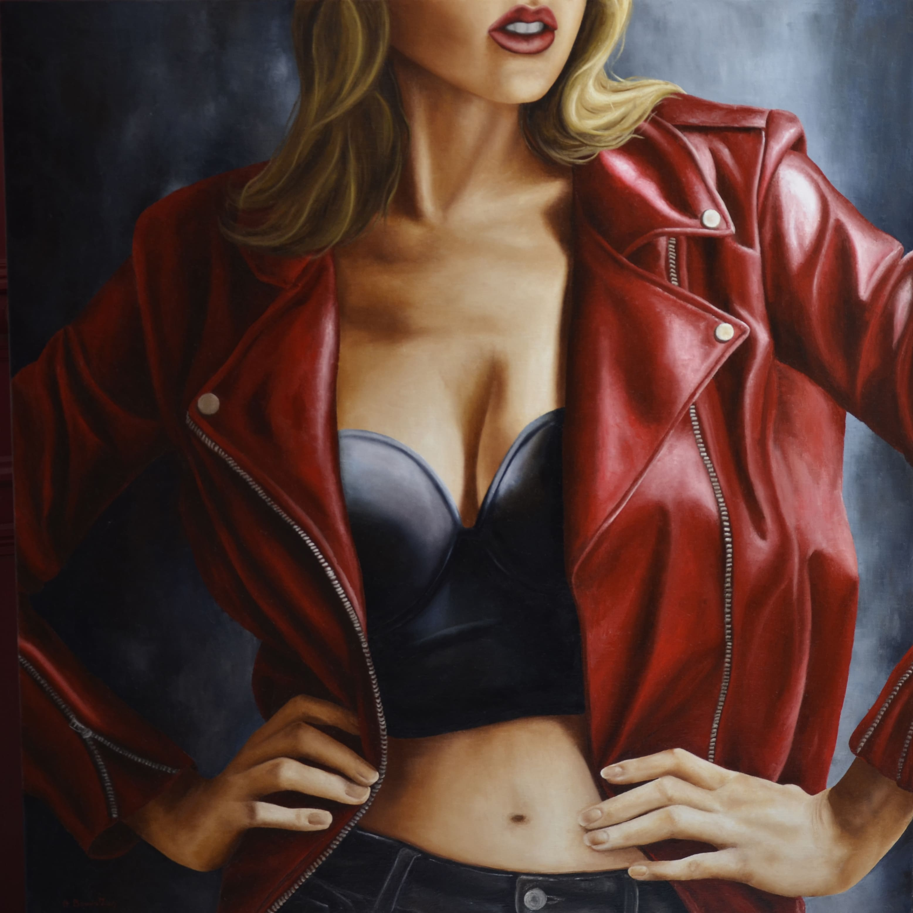

Féminitude
Fureur De Vivre
- Technique
- Huile sur Toile
- Dimensions
- 120 × 120 cm
- Année
- 2015
- Disponibilité
- Vendue
« Fureur De Vivre » est une œuvre d’Annick Bouvattier, réalisée en 2015 (huile sur toile, 120 × 120 cm). Elle fait partie de la collection « Féminitude ». Cette œuvre a été vendue.
“Fureur De Vivre” is a work by Annick Bouvattier, created in 2015 (oil on canvas, 120 × 120 cm). It belongs to the “Femininity” collection. This work has been sold.